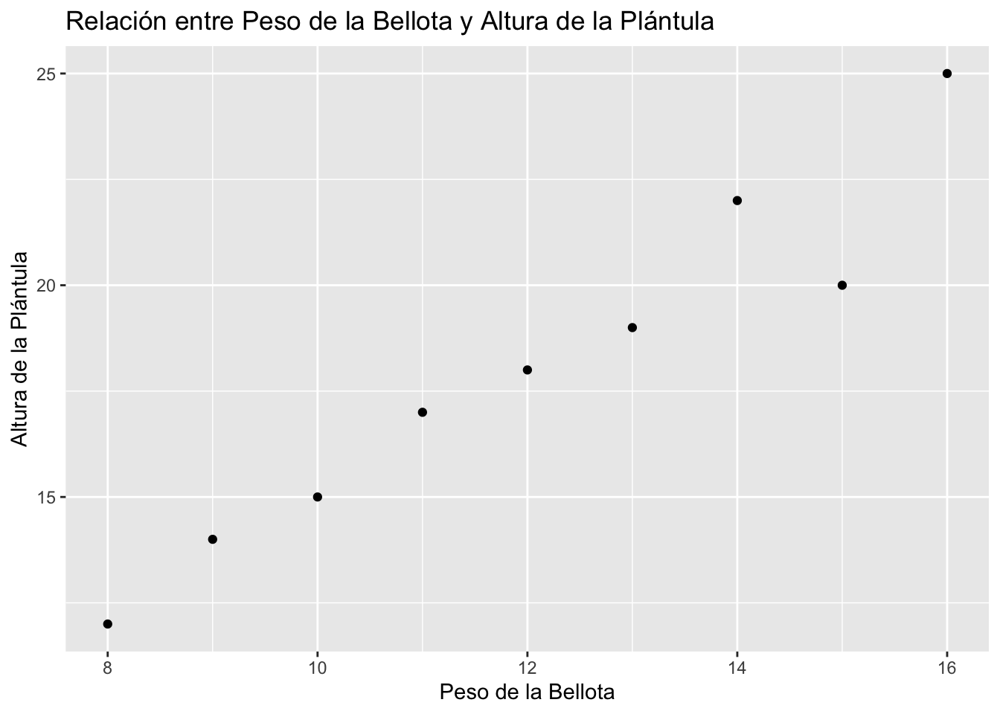

Análisis del Efecto del Peso de la Bellota en la Altura de la Plántula
Author
Tu Nombre
Published
January 18, 2024
Introducción
Este documento presenta un análisis de datos sobre el efecto del peso de la bellota en la altura de la plántula. Se utilizarán técnicas estadísticas para explorar la relación entre estas dos variables.
Carga y exploración de datos
datos <-read.csv("../datos/peso_altura_bellota.csv")# Visualizar las primeras filas del conjunto de datoshead(datos)
# Gráfico de dispersión para visualizar la relación entre las variablesggplot(datos, aes(x = peso_bellota, y = altura_plantula)) +geom_point() +labs(title ="Relación entre Peso de la Bellota y Altura de la Plántula",x ="Peso de la Bellota",y ="Altura de la Plántula")

Modelo de Regresión Lineal
# Ajustar un modelo de regresión linealmodelo <-lm(altura_plantula ~ peso_bellota, data = datos)# Resumen del modelosummary(modelo)
Call:
lm(formula = altura_plantula ~ peso_bellota, data = datos)
Residuals:
Min 1Q Median 3Q Max
-2.3000 -0.2667 0.0000 0.4333 1.2667
Coefficients:
Estimate Std. Error t value Pr(>|t|)
(Intercept) 0.8000 1.7700 0.452 0.665
peso_bellota 1.4333 0.1442 9.940 2.23e-05 ***
---
Signif. codes: 0 '***' 0.001 '**' 0.01 '*' 0.05 '.' 0.1 ' ' 1
Residual standard error: 1.117 on 7 degrees of freedom
Multiple R-squared: 0.9338, Adjusted R-squared: 0.9244
F-statistic: 98.8 on 1 and 7 DF, p-value: 2.226e-05
# Utilizar broom para convertir los resultados de la regresión en un marco de datosresultados_regresion <-tidy(modelo)# Mostrar los resultados utilizando kablekable(resultados_regresion, caption ="Resultados de la Regresión Lineal")
Resultados de la Regresión Lineal
term
estimate
std.error
statistic
p.value
(Intercept)
0.800000
1.770003
0.4519767
0.6649583
peso_bellota
1.433333
0.144200
9.9398957
0.0000223
Conclusiones
En base al análisis realizado, se observa una relación significativa entre el peso de la bellota y la altura de la plántula. El modelo de regresión lineal proporciona información sobre la fuerza y dirección de esta relación.